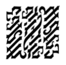

114
Mücadele sadece birkaç saniye sürdü.
Chartrand, Rocher’in önüne geçerek, Papa’nın özel dairesinin kapısını silahıyla açtığında, Camerlengo Ventresca hâlâ çığlık atıyordu. Muhafızlar içeri daldılar. Langdon ile Vittoria peşlerinden içeri koştu.
Karşılarında sarsıcı bir manzara vardı.
Oda, sadece mum ışığı ve sönmek üzere olan şömine ateşiyle aydınlanmıştı. Kohler şöminenin yanında, tekerlekli iskemlesinin önünde hantal bir şekilde ayakta duruyordu. Ayaklarının dibinde yatarken acı içinde kıvranan Camerlengo’ya doğrulttuğu silahını salladı. Camerlengo’nun cüppesi yırtılarak açılmıştı ve çıplak göğsü kapkara yanmıştı. Langdon odanın öbür köşesinden sembolü çıkartamıyordu, ama Kohler’ın yanında yerde, geniş ve dörtgen bir damga duruyordu. Metal hâlâ kıpkırmızı parlıyordu.
İki İsviçreli Muhafız hiç tereddüt etmeden davrandılar. Ateş açmışlardı. Mermiler Kohler’ın göğsüne saplanarak, onu arkaya savurdular. Kohler tekerlekli iskemlesine çökerken, göğsünden kanlar fışkırıyordu. Silahı yere düşerek sekti.
Langdon kapı eşiğinde donakalmıştı.
Vittoria da felç olmuş gibiydi. “Max...” diye fısıldadı.
Hâlâ yerde kıvranan Camerlengo, Rocher’e döndü ve eski cadı avlarındaki dehşet sahnelerinde olduğu gibi, işaret parmağını Rocher’e doğrultarak, tek bir kelimeyle bağırdı. “ILLUMINATI’Lİ!”
Ona doğru koşan Rocher, “Seni alçak herif,” dedi. “Seni sofu her...”
Bu kez Rocher’in sırtına üç kurşun sıkarak, içgüdüsel davranan Chartrand olmuştu. Yüzbaşı seramik zemine yüzüstü düşerek, kendi kanının üstünde kaydı. Chartrand ile muhafızlar hemen, acıyla kıvranırken kendi bedenine sarılan Camerlengo’nun yanına koştular.
Muhafızların her ikisi de, Camerlengo’nun göğsüne dağlanan simgeyi gördüklerinde dehşetle irkildiler. Damgayı başaşağı gören ikinci muhafız, gözlerindeki korku ifadesiyle geriye doğru sendeledi. Görünmemesi için Camerlengo’nun yırtık cüppesini yaranın üstüne örten Chartrand da sembolün etkisinde kalmış gibi görünüyordu.
Langdon odada ilerlerken heyecandan çılgına dönmüştü. Bir çılgınlık ve vahşet sisinin ardından, gördüklerine anlam vermeye çalışıyordu. Engelli bir bilim adamı, simgesel üstünlük gösterisinin peşinden Vatikan Şehri’ne gelmiş ve kilisenin en yüksek yetkilisini damgalamıştı. Haşhaşin, bazı şeylerin uğrunda ölmeye değer, demişti. Langdon kötürüm bir adamın Camerlengo’yu nasıl etkisiz hale getirmiş olabileceğini merak etti. Ama tabi, Kohler’ın silahı vardı. Nasıl yaptığı fark etmez! Kohler görevini tamamladı!
Langdon tüyler ürpertici sahneye doğru yaklaştı. Camerlengo’ya müdahale ediliyordu. Langdon tekerlekli iskemlenin yanında, dumanları tüten damgaya doğru çekildiğini hissediyordu. Altıncı damga mı? Langdon yaklaştıkça aklı daha da karışıyordu. Damga, mükemmel bir kareydi, genişti ve belli ki Illuminati Sığınağı’ndaki sandığın orta bölmesinden geliyordu. Haşhaşin, altıncı ve son damga, demişti. İçlerinde en görkemlisi o.
Kohler’ın yanında çömelen Langdon damgaya uzandı. Metalden hâlâ sıcaklık yayılıyordu. Tahta sapından tutarak onu kaldırdı. Ne görmeyi beklediğinden emin değildi ama umduğu kesinlikle bu değildi.

Langdon aklı karışmış bir halde, uzun süre bakakaldı. Hiç anlam ifade etmiyordu. Muhafızlar bunu gördüklerinde neden dehşetle haykırmışlardı? Anlamsız eğri büğrü çizgilerden oluşan bir kareydi. En görkemlisi mi? Langdon elinde çevirirken simetrik olduğunu görebiliyordu ama anlamsızdı.
Omzundaki eli hissettiğinde, Vittoria olduğunu tahmin ederek yukarı baktı. Ama bu el, kanlıydı. Tekerlekli iskemlesinden uzanan Maximilian Kohler’a aitti.
Langdon damgayı bırakarak, sendeleyip ayağa kalktı. Kohler hâlâ yaşıyor!
Ölmek üzere olan Direktör tekerlekli iskemlesinde hâlâ nefes alıyor, hırıltıyla solumaya çalışıyordu. Langdon’ın gözleri Kohler’ınkilerle karşılaştı. Bu, onu sabahın erken saatlerinde karşılayan aynı duygusuz bakışlardı. Kin ve nefret su üstüne çıkarken, ölmek üzere olan gözler daha da sert bakıyordu.
Bilim adamının vücudu kıpırdadığında, Langdon, onun hareket etmeye çalıştığını anladı. Odadaki diğerleri dikkatlerini Camerlengo’ya vermişlerdi. Langdon, onlara seslenmek istedi, ama yapamadı. Kohler’ın hayatının son saniyelerinde gösterdiği azim onu yerine mıhlamıştı. Direktör gayret gösterirken titreyerek kolunu kaldırdı ve tekerlekli iskemlesinin kolundan küçük bir cihaz çıkardı. Titreyerek uzattı. Langdon bir an için Kohler’ın silahı olmasından korkmuştu. Ama çıkardığı başka bir şeydi.
“V-ver...” Kohler’ın son sözleri hırıltılı fısıltılardı. “Bunu m-medyaya... v-ver.” Kohler hareketsizce yığıldı ve cihaz kucağına düştü.
Şaşkınlık içindeki Langdon cihaza baktı. Elektronikti. Önünde SONY RUVI kelimeleri yazıyordu. Langdon bunun, yeni çıkan ultra minyatür avuç içi kameralarından olduğunu fark etti. Adam işinin erbabı, diye düşündü. Anlaşıldığı kadarıyla Kohler medyanın yayınlamasını istediği bir tür intihar mesajı kaydetmişti... bilimin önemi ve dinin kötülüğü hakkında bir vaaz olduğuna hiç şüphe yoktu. Langdon o gece adamın davasına yeterince yardımcı olduğuna karar verdi. Chartrand, Kohler’ın kamerasını görmeden, Langdon, onu derin ceket cebine attı. Kohler’ın son mesajı cehennemde çürüyebilir!
Sessizliği Camerlengo’nun sesi bozdu. Doğrulup oturmaya çalışıyordu. Chartrand’a soluk soluğa, “Kardinaller,” dedi.
Chartrand, “Hâlâ Sistine Şapeli’ndeler,” diye hayıflandı. “Yüzbaşı Rocher’in emri...”
“Boşaltın... hemen. Herkesi.”
Chartrand diğer muhafızlardan birini, koşarak diğer kardinalleri dışarı çıkartmaya gönderdi.
Camerlengo acıyla yüzünü buruşturdu. “Helikopter... ön taraftan... beni hastaneye götürün.”